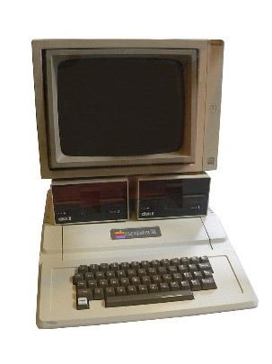
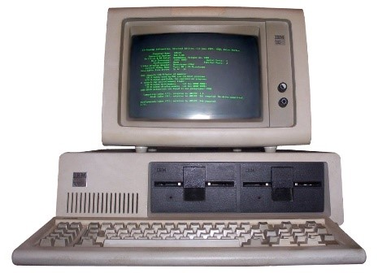
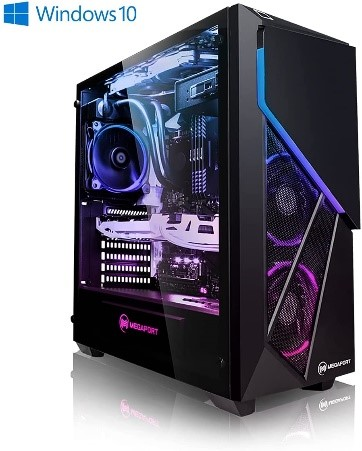

(Da Wikipedia, l'enciclopedia libera)
Un personal computer (dalla lingua inglese, in italiano letterale “calcolatore personale” oppure “elaboratore personale”, solitamente abbreviato in PC) è un qualsiasi computer che si presti all'utilizzo proprio personale e alla personalizzazione da parte dell'utente nell'uso quotidiano. Il termine personal computer nasce negli anni 80 quando vengono messi in commercio i primi computer per il grande pubblico. Infatti precedentemente i calcolatori erano inaccessibili alla gente comune per via delle ingenti dimensioni e prezzo elevato, e venivano acquistati principalmente da ricercatori o grandi aziende. Attualmente col termine personal computer (PC) si vanno ad indicare i computer desktop e i computer laptop.
Un calcolatore personale è costruito tipicamente a livello hardware secondo l'architettura di von Neumann ed è composto da un'unità di elaborazione centrale, in inglese central processing unit, abbreviato in CPU (processore) e periferiche varie, spesso per facilitarne l'uso in maniera tipicamente user friendly. A livello software il relativo sistema operativo implementa nella sua interfaccia utente la cosiddetta metafora della scrivania. Il PC di fatto ha soppiantato nel tempo la vecchia macchina da scrivere per uso personale e d'ufficio grazie ai programmi di videoscrittura aggiungendovi numerose altre funzionalità (es. calcolo, grafica, progettazione ecc...) grazie alla sua facile programmabilità..
| Nome | Presentato | CPU |
|---|---|---|
| Apple II  | 16 aprile 1977 | MOS 6502 |
| IBM 5150  | 12 agosto 1981 | Intel 8088 |
| Gaming PC  | Attuale | Intel Core i9 |